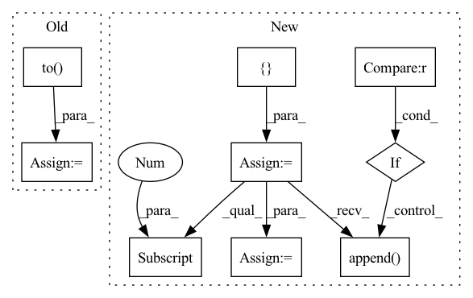

Pattern ID :4115
Before Change
train_dataset = torch.utils.data.TensorDataset(x_seq, target_seq)
train_loader = torch.utils.data.DataLoader(train_dataset, batch_size=batch_size, shuffle=shuffle)
criterion = torch.nn.MSELoss().to( device)
for batch_data in train_loader:
encoder_inputs, labels = batch_data
outputs = model(encoder_inputs, edge_index)
assert outputs.shape == (batch_size, node_count, num_for_predict)After Change
T = len_input
x_seq = torch.zeros([batch_size,node_count, node_features,T]).to(device)
target_seq = torch.zeros([batch_size,node_count,T]).to(device)
edge_index_seq = []
for b in range(batch_size):
for t in range(T):
x, edge_index = create_mock_data(node_count, edge_per_node, node_features)
x_seq[b,:,:,t] = x
if b == 0 :
edge_index_seq.append( edge_index)
target = create_mock_target(node_count, num_classes)
target_seq[b,:,t] = target
shuffle = True
train_dataset = torch.utils.data.TensorDataset(x_seq, target_seq)
train_loader = torch.utils.data.DataLoader(train_dataset, batch_size=batch_size, shuffle=shuffle)
for batch_data in train_loader:
encoder_inputs, _ = batch_data
outputs1 = model(encoder_inputs, edge_index_seq)
outputs2 = model(encoder_inputs, edge_index_seq[0] )
assert outputs1.shape == (batch_size, node_count, num_for_predict)
assert outputs2.shape == (batch_size, node_count, num_for_predict)
In pattern: SUPERPATTERN
Frequency: 3
Non-data size: 9
Instances Fragment ID: 15272329
Project Name: benedekrozemberczki/pytorch_geometric_temporal
Commit Name: 8efa512ff3ac06546a082de036a85428720abd7a
Time: 2021-03-20
Author: He_YX@outlook.com
File Name: test/convolutional_test.py
M Class Name: AnonimousClass
N Class Name: AnonimousClass
M Method Name: test_astgcn(0)
N Method Name: test_astgcn(0)
M Parent Class:
N Parent Class:
M File Name: test/convolutional_test.py
N File Name: test/convolutional_test.py
M Start Line: 248
M End Line: 285
N Start Line: 236
N End Line: 266
Before Change
def forward(self, interaction):
item_seq = interaction[self.ITEM_ID_LIST]
feature_seq = self.item_feat[self.FEATURE_FIELD][item_seq].to( item_seq.device)
// 1. shape [B Len num] means the item has multi-feature, i.e. one movie may be classified
// into multi-class. We would use sum of the features as the input.
// 2. shape [B Len] means the item has single-feature, i.e. one store could only in one city.
item_emb = self.item_embedding(item_seq)
feature_emb = self.feature_embedding(feature_seq)
if feature_seq.dim() == 3: // pos_features [B Len Num]
feature_mask = (feature_seq != 0).float()After Change
sparse_embedding, dense_embedding = self.embed_input_fields(item_seq)
// concat the sparse embedding and float embedding
feature_table = []
if sparse_embedding is not None :
feature_table.append( sparse_embedding)
if dense_embedding is not None:
feature_table.append(dense_embedding)
feature_table = torch.cat(feature_table, dim=1)
// [batch len num_features hidden_size]
table_shape = feature_table.shape
feat_num, embedding_size = table_shape[-2], table_shape[-1]
feature_emb = feature_table.view(table_shape[:-2] + (feat_num * embedding_size,))
feature_gru_output, _ = self.feature_gru_layers(feature_emb) // [B Len H]
output_concat = torch.cat((item_gru_output, feature_gru_output), -1) // [B Len 2*H] Fragment ID: 15272360
Project Name: rucaibox/recbole
Commit Name: 566d8d4555427201b4d3ec3f12d0b943a2e20d83
Time: 2020-10-11
Author: 838803621@qq.com
File Name: recbox/model/sequential_recommender/gru4recf.py
M Class Name: GRU4RecF
N Class Name: GRU4RecF
M Method Name: forward(2)
N Method Name: forward(2)
M Parent Class: SequentialRecommender
N Parent Class: SequentialRecommender
M File Name: recbox/model/sequential_recommender/gru4recf.py
N File Name: recbox/model/sequential_recommender/gru4recf.py
M Start Line: 99
M End Line: 118
N Start Line: 301
N End Line: 319
Before Change
train_dataset = torch.utils.data.TensorDataset(x_seq, target_seq)
train_loader = torch.utils.data.DataLoader(train_dataset, batch_size=batch_size, shuffle=shuffle)
criterion = torch.nn.MSELoss().to( device)
for batch_data in train_loader:
encoder_inputs, labels = batch_data
outputs = model(encoder_inputs, edge_index)
assert outputs.shape == (batch_size, node_count, num_for_predict)After Change
T = len_input
x_seq = torch.zeros([batch_size,node_count, node_features,T]).to(device)
target_seq = torch.zeros([batch_size,node_count,T]).to(device)
edge_index_seq = []
for b in range(batch_size):
for t in range(T):
x, edge_index = create_mock_data(node_count, edge_per_node, node_features)
x_seq[b,:,:,t] = x
if b == 0 :
edge_index_seq.append( edge_index)
target = create_mock_target(node_count, num_classes)
target_seq[b,:,t] = target
shuffle = True
train_dataset = torch.utils.data.TensorDataset(x_seq, target_seq)
train_loader = torch.utils.data.DataLoader(train_dataset, batch_size=batch_size, shuffle=shuffle)
for batch_data in train_loader:
encoder_inputs, _ = batch_data
outputs1 = model(encoder_inputs, edge_index_seq)
outputs2 = model(encoder_inputs, edge_index_seq[0] )
assert outputs1.shape == (batch_size, node_count, num_for_predict)
assert outputs2.shape == (batch_size, node_count, num_for_predict)
Fragment ID: 15272328
Project Name: benedekrozemberczki/pytorch_geometric_temporal
Commit Name: 8efa512ff3ac06546a082de036a85428720abd7a
Time: 2021-03-20
Author: He_YX@outlook.com
File Name: test/convolutional_test.py
M Class Name: AnonimousClass
N Class Name: AnonimousClass
M Method Name: test_mstgcn(0)
N Method Name: test_mstgcn(0)
M Parent Class:
N Parent Class:
M File Name: test/convolutional_test.py
N File Name: test/convolutional_test.py
M Start Line: 291
M End Line: 328
N Start Line: 293
N End Line: 311